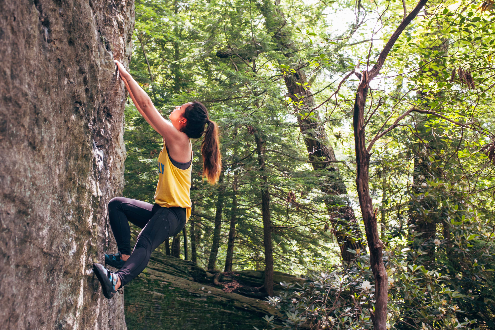
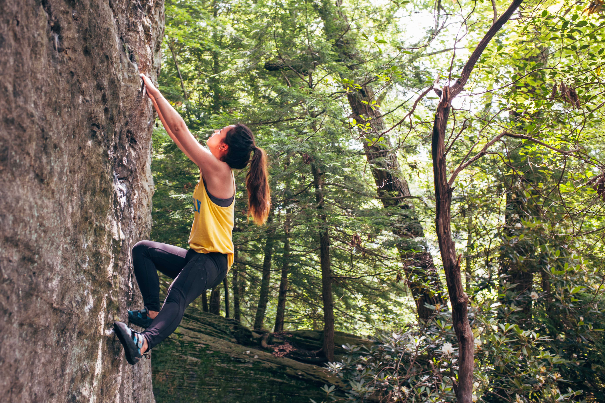

There are several types of climbing provided for us at the gym.
This is the simplest form of climbing as it requires no equipment such as a harness or rope.
The climbing problems are built on walls that go not too far up from the ground, and the “ground” is a
cushiony mat that protects us in case we fall.
Depending on the problem, one may require more strength while others use more balance skills.
 

Unlike bouldering that one can do on their own, top-rope climbing requires a partner – one person climbs the
wall, and the other person stays on the ground, who is called a belayer.
The belayer has extreme responsibilities as it is their job to manage the rope to catch the climber in
case of a fall.
Top-roping requires harnesses for both people and a rope that’s secured to an overhead anchor.


Lead climbing is for people who are skilled top-rope climbers since the climber clips a rope into a series
of quickdraws that are aligned with the route as they climb up the wall.
This is also partner-based, and the climber is prone to taking harder falls than when top-roping.